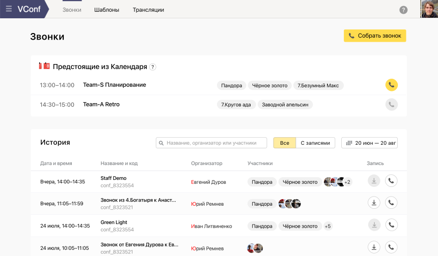
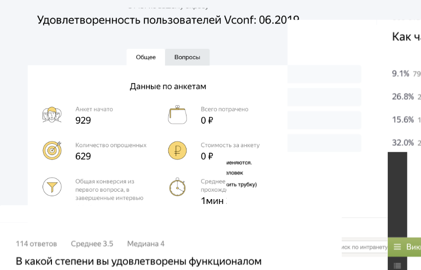
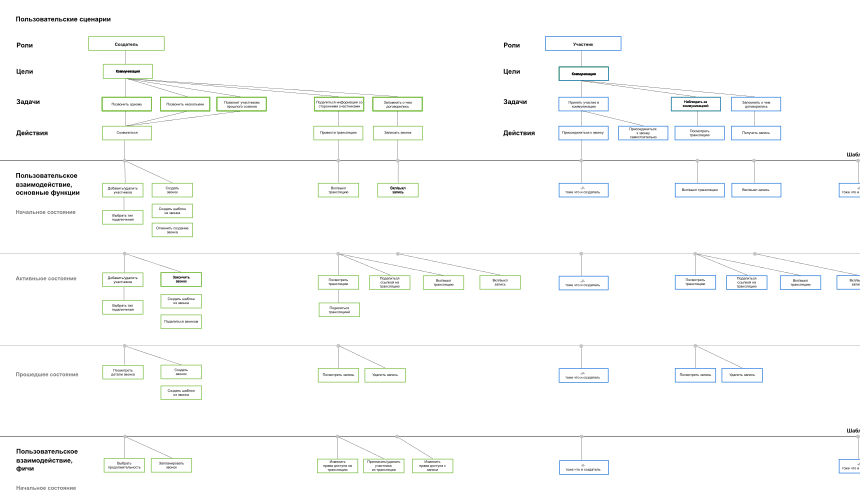

Scope of work
Working with internal teams on tasks of different complexity: from creating small features to developing a new version of the services. Fully redesigned internal video conference service VConf, which became the most important tool for Yandex internal communication.
Responsibilities
- interaction and visual designing (UX, UI design, prototypes);
- creating concepts of new user experience;
- conducting user researches and interviews;
- interacting with a development team;
- planning and tracking deadlines with development team.
VConf conference service redesign
VConf organizes meetings and broadcasts events, including the company's general meeting. Not only Yandex employees can participate in meetings, but also external users — to join, just open the link in the browser.
Redesign of VConf was my most important project in Yandex, after redesign VConf had become one of the main services for internal communications in Yandex.
Problems
Due to the full transition of the company to VConf, a new version of the service was required. There was a request for new functionality and a more convenient interface for calling. An admin panel and an adaptive version were also required.
Research
- users were interviewed about the current version, the level of satisfaction was measured and statistics were analyzed;
- corridor UX testing was conducted, problem areas were identified;
- collected suggestions from admins and technical restrictions from developers;
- direct and indirect competitors are investigated.
User interaction design
- roles of users and their formal goals were described;
- scheme of user interaction was made;
- functionality is divided into the main and additional;
- user login scenarios are thought out.
Design
The difficulty was in the layout of the main page. It was necessary to understand how to show calls and templates. Initially, templates and the creation of calls occupied the main place on the main screen.
User interviews had shown that the previous solution was inconvenient. It came to an understanding that calls are more important than templates and it should be displayed on the main page. Templates were placed on a separate tab.
Meetings list on the main page
Creating a call involved a lot of variability, it could be created from scratch or from a template. Participants could be connected via work phone, mobile, web version or external application such as Zoom.
Creating a meeting from scratch
Adding participants to the call could be by any parameters: name, nickname, phone number or an external application. A universal smart input was developed to add participants in any way.
Universal input for adding participants
Meeting templates
Adaptive version
Redesign results
- service has become much more convenient, according to user reviews;
- adding the admin panel reduced the contact to the support service several times;
- the adaptive version has expanded the possibilities of using the service;
Thanks to the redesign, VConf has become one of the main services for internal communications in Yandex.
Launch PushOk embedded agreement widget
To coordinate various organizational tasks was required a simple embedded solution. It was necessary to think through the various states and options of the widget.
Design
- created schemes of user interaction and developed all states;
- prototyping and conducted quality user testing
- created visual design based on the design system;
- created email notifications templates.
Widget states
Email notifications
Finance Page Creation
The task was to collect all the financial information about an employee in one place to save the FTE of HR analysts.
Problem
- fragmented financial information;
- there is no display of options data.
Solution
- subject area, customer requests, and legal restrictions were studied;
- information was arranged and framed, the minimum and maximum content was thought out.
Loan Calculator Creation
The task was to redesign a loan calculator with different options.
Solution
- split the display depending on the type of loan;
- display the status of the borrower with the ability to view the details;
- limit values are provided in the inputs.
And a couple of dozen interesting projects...
Other jobs
“The most popular online payment acceptance service in Russia", according to MARC
Engaging in the design and development of personal projects with a small team
First concept of the main page